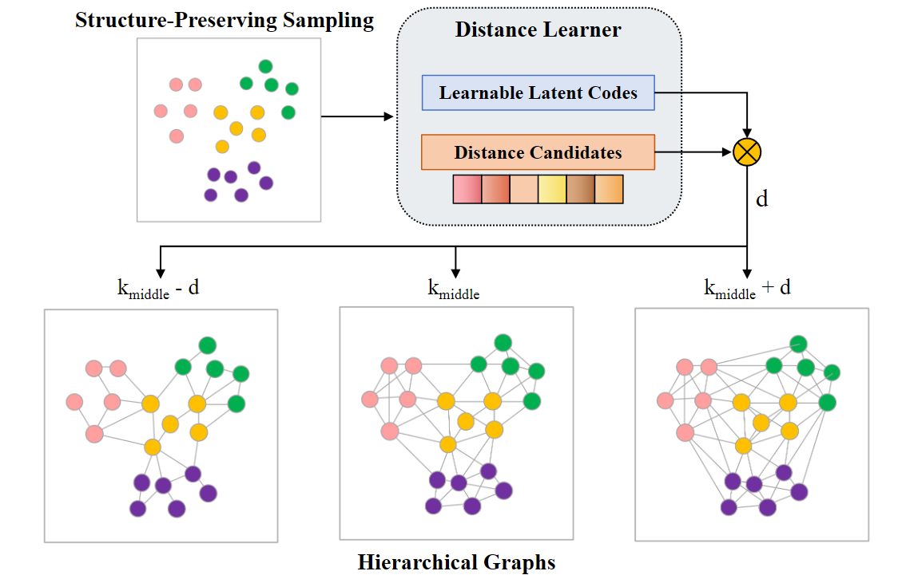
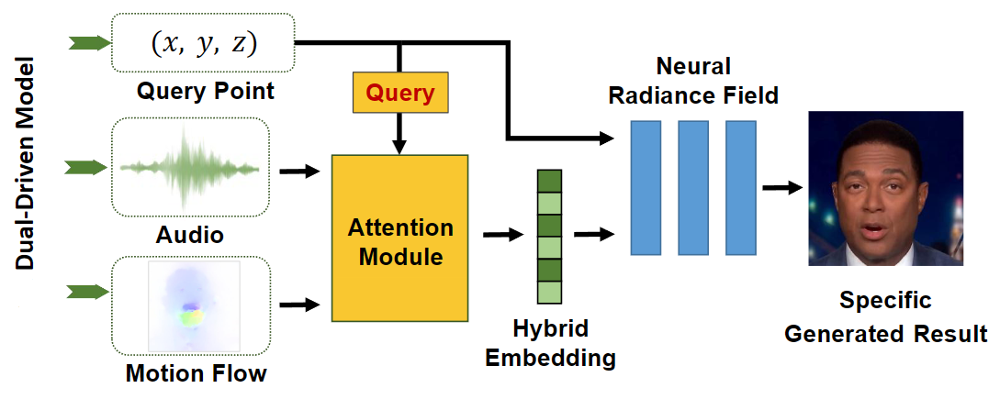
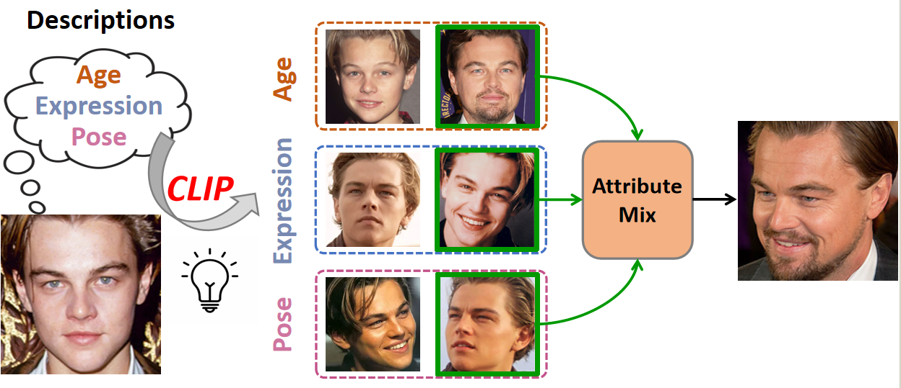
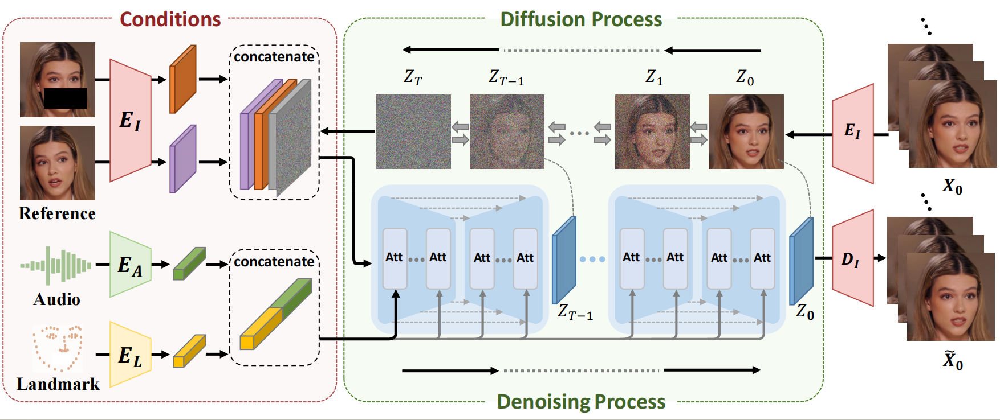
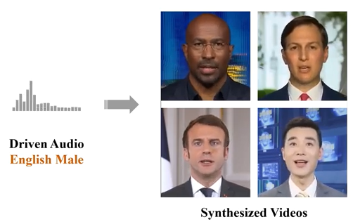
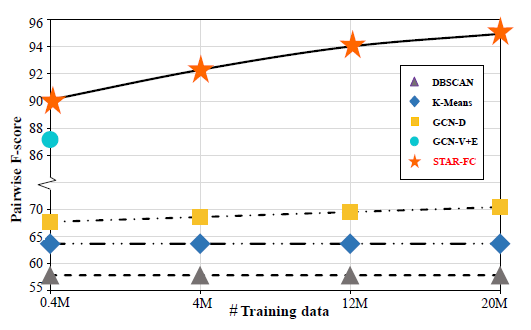

|
Shuai Shen
I am a fifth-year Ph.D. student in the Department of Automation at Tsinghua University, advised by Prof. Jiwen Lu and Prof. Jie Zhou.
Prior to that, I received my B.S. degree in the Department of Automation at Tsinghua University in 2019.
My research interests lie in computer vision and deep learning, particularly in face clustering and face synthesis.
I anticipate graduating in June 2024, and now I am looking for a postdoctoral position. If you are interested in my research, feel free to drop me an e-mail shens19[AT]mails.tsinghua.edu.cn.
Email /
GitHub /
Google Scholar
|
|
|
News
2023-10: I get the Friends of Tsinghua - Suzhou Talent Scholarship (top 5%).
2023-08: One paper is accepted to TMM.
2023-07: One paper is accepted to TPAMI.
2023-07: One paper is accepted to ICCV 2023.
2023-03: One paper is accepted to CVPR 2023.
2022-10: I get the Huiyan Talent Second Prize Scholarship of Tsinghua (top 10%).
2022-07: One paper is accepted to ECCV 2022.
2021-03: One paper is accepted to CVPR 2021.
|
(* indicates equal contribution.)
|

|
STAR-FC: Structure-Aware Face Clustering on Ultra-Large-Scale Graphs
Shuai Shen, Wanhua Li, Zheng Zhu, Jie Zhou, and Jiwen Lu
IEEE Transactions on Pattern Analysis and Machine Intelligence (TPAMI), 2023
[PDF]
[Code]
We develop a hierarchical GCN training paradigm and the adaptive Node Intimacy strategy for adaptive neighbor interaction.
|
|

|
SD-NeRF: Towards Lifelike Talking Head Animation via Spatially-adaptive Dual-driven NeRFs
Shuai Shen*, Wanhua Li*, Xiaoke Huang*, Zheng Zhu, Jie Zhou, and Jiwen Lu
IEEE Transactions on Multimedia (TMM), 2023
[PDF]
[Video]
We propose a Spatially-adaptive Dual-driven NeRF (SD-NeRF) to model the spontaneous facial motions with audio-to-lip mapping into the facial radiance field for vivid talking head animation.
|
|

|
CLIP-Cluster: CLIP-Guided Attribute Hallucination for Face Clustering
Shuai Shen, Wanhua Li, Xiaobing Wang, Dafeng Zhang, Zhezhu Jin, Jie Zhou, and Jiwen Lu
Proceedings of the IEEE/CVF International Conference on Computer Vision (ICCV), 2023
[PDF]
We propose an attribute hallucination framework named CLIP-Cluster to narrow the intraclass variance caused by different face attributes for face clustering.
|
|

|
DiffTalk: Crafting Diffusion Models for Generalized Audio-Driven Portraits Animation
Shuai Shen, Wenliang Zhao, Zibin Meng, Wanhua Li, Zheng Zhu, Jie Zhou, and Jiwen Lu
IEEE/CVF Conference on Computer Vision and Pattern Recognition (CVPR), 2023
[PDF]
[Video]
[Code]
[Project]
We model the talking head synthesis as an audio-driven temporally coherent denoising process based on the Diffusion Model, which can be generalized across different identities.
|
|

|
Learning Dynamic Facial Radiance Fields for Few-Shot Talking Head Synthesis
Shuai Shen, Wanhua Li, Zheng Zhu, Yueqi Duan, Jie Zhou, and Jiwen Lu
European Conference on Computer Vision (ECCV), 2022
[PDF]
[Video]
[Code]
[Project]
A NeRF-based few-shot talking head synthesis method, which can rapidly generalize to an unseen identity with few training data.
|
|

|
Structure-Aware Face Clustering on a Large-Scale Graph with 10^7 Nodes
Shuai Shen, Wanhua Li, Zheng Zhu, Guan Huang, Dalong Du, Jiwen Lu, and Jie Zhou
IEEE/CVF Conference on Computer Vision and Pattern Recognition (CVPR), 2021
[PDF]
[Video]
[Code]
[Project]
It is the first face clustering method to train on very large-scale graph with 20M nodes, and achieve superior inference results on 12M testing data.
|
|
Honors and Awards
Friends of Tsinghua - Suzhou Talent Scholarship (top 5%), 2023.
Huiyan Talent Second Prize Scholarship of Tsinghua (top 10%), 2022.
|
|
Professional Activities
Reviewer, IEEE International Conference on Multimedia and Expo (ICME), 2021.
Reviewer, European Conference on Computer Vision (ECCV), 2022.
Reviewer, IEEE Transactions on Pattern Analysis and Machine Intelligence (TPAMI).
Reviewer, IEEE Transactions on Image Processing (TIP).
Reviewer, IEEE Transactions on Information Forensics and Security (TIFS).
Reviewer, IEEE Transactions on Multimedia (TMM).
Reviewer, IEEE Transactions on Circuits and Systems for Video Technology (TCSVT).
Reviewer, IEEE Transactions on Biometrics, Behavior, and Identity Science (TBIOM).
|
|
Teaching Assistant
TA Numerical Analysis and Algorithm, Tsinghua University, 2020, 2021.
TA Analog Electronic Technology Foundation, Tsinghua University, 2020, 2021.
|
|
{kind=link}